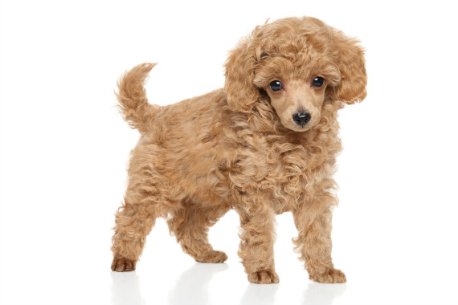

| דף ראשי | גזעים | מחלות | רקעים ותמונות | סקר | צרו קשר |
|---|
| קוקר ספאנייל |
| סמוייד |
| שפיץ יפני |
| פומרניאן |
| פודל |
| דני ענק |
| דלמטי |
| רועה גרמני |
| רועה קווקזי |
| רועה בלגי |
| בולדוג אמריקאי |
| בולדוג צרפתי |
| בולדוג אנגלי |
| צ'או צ'או |
| שיצ'ו |
| אמסטף |
| פינצ'ר |
| רוטווילר |
| דוברמן |
| האסקי סיבירי |
פודל
מידע נוסף
גזע הפודל החל את דרכו ככלב ציד ברחבי גרמניה. עם הזמן הגיעו כלבים מסוג פודל גם אל רוסיה, שם הרוסים הבחינו באינטליגנציה הגבוהה האופיינית לכלב. לאחר תקופה קצרה גייסו הרוסים את הפודלים לעבודה בקרקס, עם הזמן הגיע הפודל אל שאר הקרקסים בעולם ומכלב ציד הפך הפודל לכלב תעלולים שמקבל תשואות מהקהל.
פודל - מקור הגזע והיסטוריה
מקור השם פודל מהמילה puddle שפרושה הוא להשתכשך. הפודל במקור הוא כלב ציד שתפקידו: לאחר שהצייד פגע בציד, הפודל צריך לרוץ ולהחזיר את הציד אל הבעלים. מקור הגזע מגרמניה, אבל הגזע של היום הוא שילוב של גזעיים רוסים, גרמנים וצרפתים. הפודל נראה גם בתקופות קדומות בצורת פסלים וציורי קיר מהתקופה הרומית . בתחילה היו הפודלים כלבי עבודה בתחום הציד ועם הזמן כלבי הפודל זלגו לקרקס. הגזע עלה בפופולאריות שלו והיום נחשב לאחד הגזעים האהודים ביותר. למעשה מי שגידל פודל בחייו לא ירצה שום גזע אחר.
פודל - נתונים ומאפיינים
הפודל מגיע בארבעה תת-גזעים: 1)טוי 2)ננסי 3)בינוני 4)ענק פרוותם של הפודלים ארוכה ומתולתלת, צבע הפרווה נע בין שחור אפור חום ולבן. מאפיינים נוספים: אף קטן, אוזניים קטנות, גוף שרירי ומוצק . משקל: 6 ק"ג לפודל הננסי ועד 40 ק"ג לפודל הענק גובה: 28 ס"מ לפודל מגזע הטוי ועד 60 ס"מ לפודל הענק.
מחלות נפוצות וטיפול - כלב פודל
הפודלים סובלים לרוב ממחלות עיניים ואוזניים. הסיבה לכך היא ממגע הפרווה המלוכלכת באוזניים או בעיניים. שמירה על פרווה נקייה ומסופרת יכולה למנוע מחלות אלה ומחלות נוספות. בנוסף הפודלים סובלים מבעיות הקשורות לעצמות ולשרירים, אבל רק בשלב מאוחר יותר בחיים.
